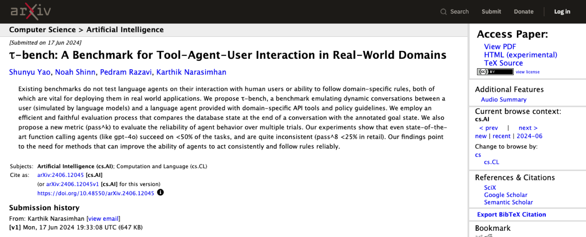
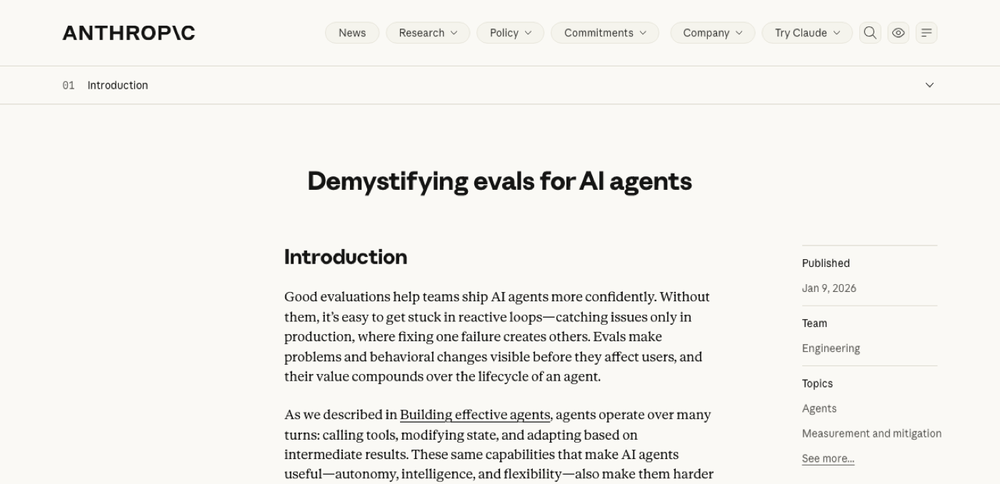
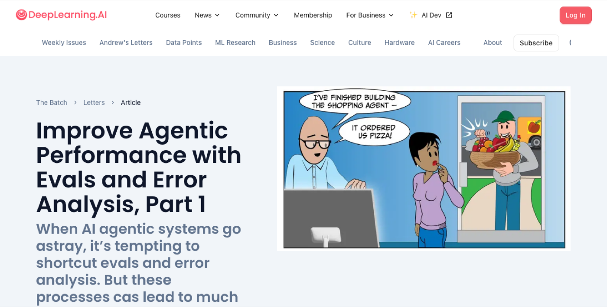
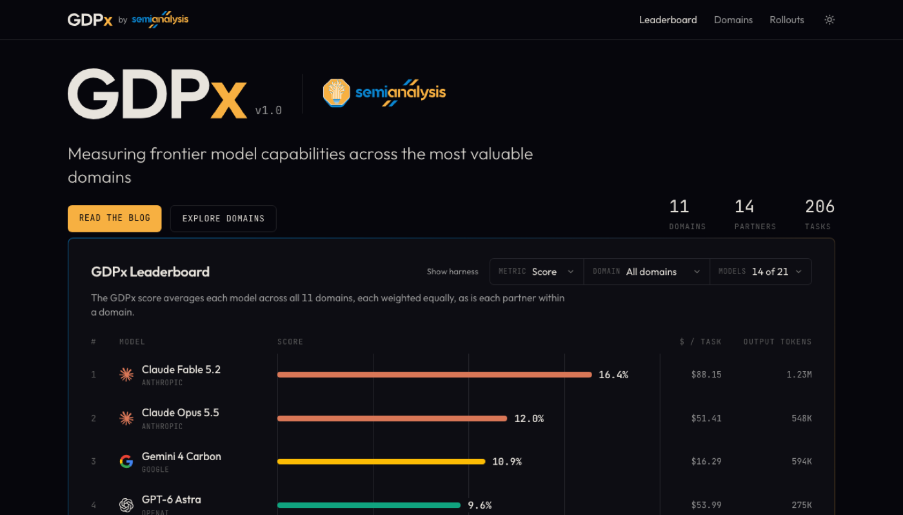

Week 4: If you can't measure it, you haven't built it
Before class
- Watch 4.1 Golden sets and pass^k, 4.2 Error analysis: reading twenty traces and 4.3 LLM-as-judge and how to calibrate it. The quiz at the start of class has five questions on them.
- Read Anthropic, Demystifying evals for AI agents (January 2026), and Yao et al., τ-bench (June 2024). Read for two things: outcome checks against path checks, and why τ-bench reports pass^k.
- Bring your served agent as it stood after Lab 3, with its runs visible in LangSmith, and the failures you have seen in its traces. They become golden cases.
Tonight
| 5:30 | Quiz on the videos, trace of the week (one team, ten minutes), then the ideas below. |
| 6:10 | Lab 4, Evaluate. Two paths, one output sheet, then the GDPx exercise for everyone. |
| 7:50 | Break. |
| 8:05 | Studio. The evaluation report, first version. I sit with two teams at a time. |
| 9:15 | Synthesis, and what to do before week 5. |
A golden set, run more than once
A golden set is a fixed list of tasks with known correct outcomes. Each case has three parts: the input, a description of what done looks like, and a way to check it, by exact match, by a rule, or by a person. Your project needs twenty. Start with ten tonight. Cases come from three places. Real requests, anonymized. The failures you have already seen in traces. And edge cases: an empty input, a question with two valid answers, a request the agent should refuse. A golden set made only of easy cases measures nothing.
In a negative case the right outcome is that nothing happens: the agent declines, explains, and calls no write tool. For an ambiguous case, decide in advance what counts as a pass: either answer, or a clarifying question with no tool call.
Why run each case more than once? Because agents are not deterministic. The same input can take a different path next time. The clearest demonstration is τ-bench, from June 2024, a benchmark of customer-service tasks with a simulated user and real tools. The best agents of the time passed fewer than half the tasks on a single run. Asked to pass the same task eight times in a row, they managed it on fewer than a quarter. The paper introduced pass^k, the chance that a task passes k runs in a row, to make that gap visible.

Take an agent that passes a task 90 percent of the time. Two runs in a row, 81 percent. Eight, 43 percent. A customer who uses it once a day for a working week sees a clean week less than six times in ten. That is the number a manager needs, and the number a demo hides.
So for every case you run the agent k times, at least three, and report two numbers side by side: the share of runs that passed, and the share of cases that passed every time. The gap between the two numbers tells you how consistent the agent is.
Ask the room: your retrieval report gave recall@k on ten questions, one run each. Which would you bet pass three times in a row?
Grade the outcome, and the path when it matters
What counts as a pass? Anthropic's January 2026 guide to agent evals makes a distinction you should copy. Grade the outcome: did the state of the world end up right? The refund was issued for the right amount. The file exists and contains the right table. And grade the path when it matters: which tools were called, in what order, with what arguments. An agent that reached the right answer by calling a tool it was not supposed to call did not pass.

The two checks map onto the four questions. An outcome check answers the third, "How do we know it did the right thing, reliably, and not once in a demo?" A path check answers the first two, "What tools may the loop call?" and "What is it allowed to touch?" The trace is where you check the path, which is why every case in your harness should save its trace.
Write a path check only where the path matters, since on every case it makes the set brittle. Neither check reads the agent's own closing message. The GDPx section below says what that sentence was worth.
When the service is a conversation, the unit is the whole conversation, and single questions hide most failures. The user's second message depends on the agent's first, so the case needs a scripted user: an opening, answers to a clarifying question, what happened after each step, and the step at which they report the fix or a stop condition. The checks read the trajectory: steps in order, none repeated, one per turn, the prerequisite first, no instruction a tool did not hand over, the right ending. Report pass^k over whole conversations and cost per successful conversation, since every turn re-sends the turns before it.
Error analysis: twenty traces, one sentence each, then count
Andrew Ng wrote a two-part letter in October 2025. The teams that improve agents fastest are the ones that read their failures, and the teams that stall are the ones that guess at fixes from the final output. The final output tells you that something went wrong. Only the trace tells you where: which tool call, which argument, which retrieved passage, which instruction.

The procedure is short. Pull twenty failed traces, chosen at random rather than the ones that look interesting. For each one, read from the top until you find the first step where it went wrong, and write one sentence: what happened and why. Do not fix anything yet. When you have twenty sentences, group them. Five to eight categories usually appear: wrong tool, invented argument, retrieved the wrong passage, ignored an instruction, stopped too early, kept going too long. Count them. Fix the biggest category first, because one fix there moves the pass rate more than ten fixes elsewhere. Re-run the golden set, and do it again.
In research terms: open coding, then a taxonomy, then counts, then priority.
Most of the failures you find will be harness problems rather than model problems: a tool description that misled the model, a tool result trimmed so hard the answer was cut off, a stop condition that fired a step early. Genuine model problems, where the context was right and the reasoning was wrong, are rarer than people expect once the harness is fixed. Harness problems are yours to fix, this week.
Ask the room: take the last failure you saw in your own agent's trace. What was the first wrong step, harness problem or model problem?
A judge is a second model with a rubric, calibrated against your labels
Some of your checks cannot be a rule: is this summary faithful, is this email appropriate, did the agent explain the refusal politely. For those you use a judge: a second model call that reads the task, the output and often the trace, and answers a narrow question against a rubric you wrote, pass or fail, with a reason. Keep it binary. Scores out of ten drift from run to run, and nobody can say what a seven means. A judge scales what you learned from reading traces. It does not replace the reading.
Model judges have known biases, documented since 2023, and each has a fix.
| Bias | What the judge does | The fix |
|---|---|---|
| Position | Prefers the answer it saw first, or last. | Randomize the order, or grade one answer at a time. |
| Length | Prefers the longer answer. | Grade against the rubric rather than by comparison. |
| Self-preference | Prefers its own style, which matters if agent and judge share a model. | Use a different model family for the judge. |
| Confidence | Believes a confident wrong answer. | Ask for the evidence before the verdict. |
Calibration is how you earn the right to use a judge. Take thirty to fifty traces and label them yourselves, pass or fail, with two people labeling independently and resolving disagreements. Write the rubric and run the judge on the same traces. Where the judge and the humans disagree, read those cases. Usually the rubric was vague. Sometimes the humans were wrong. Fix the rubric and run again. You are done when agreement is high enough that you would act on the judge's verdict. Tonight you do it on ten answers.
A judge nobody calibrated is an opinion with a cost per call. So the report includes the rubric verbatim, the agreement with the human labels and on how many cases, the kinds of failure the judge tends to miss, and which model judged and whether it shares a family with the agent.
Rule checks come first and the judge second. An uncalibrated judge will pass a summary that invented steps and fail a correct refusal. A rule catches both. Keep the judge for what a rule cannot read.
The GDPx exercise: one task, four harnesses
In class you also read traces that are not yours. GDPx is a benchmark released by SemiAnalysis in November 2026: 206 tasks written by partner firms in eleven domains, each run by several frontier models with their own harnesses, and graded by the firms. For one task per partner, every run is public, including the full trace. As of November 2026 the best model scored about 16 percent.

We read those transcripts ourselves while preparing this course. One finding to take with you: a final message that announced the work had been verified was no more likely to score well than one that did not. The claim of checking is not checking.
Tonight every team opens one task in the GDPx viewer and reads the four coding harnesses' transcripts on it, at the viewer. For each harness you write one line: what it claimed, what it actually did, and where it first went wrong. The method is the one from the CIS 4394 week 11 trace lab.
Ask the room: which of the four would you have trusted from its final message alone? Did the trace agree?
Trace of the week
One team opens the evening with one trace from its agent: what it did, step by step, and what it taught them. Ten minutes, the actual trace on the screen, never slides about the trace. The room's job as it watches: find the first wrong step rather than the last one, and say which of the error-analysis categories it belongs to.
Lab 4: Evaluate
Goal: ten golden cases run three times each, an error analysis of twenty traces, and a judge checked against your own labels. Starter files are posted on iCollege before class. One output sheet per team at 7:50.
Code path
- Write ten golden cases in the starter's case file: the input, what done looks like, and the check. Include one case the agent should refuse and one with two valid answers.
- Run the starter script against your endpoint. It runs each case three times, applies the rule checks, and logs every run as a trace to LangSmith. Mark the person-checked runs yourselves.
- If your service is a conversation, add one multi-turn case to the starter's case file: the script, the step keys, the expected ending. Run it three times against your endpoint and report pass^3 over conversations next to the single-turn number.
- Compute the pass rate per run (the share of thirty runs that passed) and pass^3 (the share of ten cases that passed all three times).
- Pull twenty traces from LangSmith, failures first. Read each from the top, write one sentence naming the first wrong step, group, count, make one fix in the biggest category, re-run, and record what the two numbers did.
- Write a binary rubric for one check that needs a person. Two of you label ten answers independently, then run the judge script on the same ten and report the agreement rate.
No-code path
- Enter the same ten cases as a dataset in LangSmith: the input, the expected output or the rule, and who checks it. One refusal, one ambiguous case.
- Run your Fleet agent on each case three times. Open the runs in LangSmith's evaluation view and mark each one pass or fail against its check.
- If your service is a conversation, play the scripted user: one reads the script, one runs the agent in Fleet three times, one marks the checklist: order, repeats, one step per turn, prerequisite, invented instruction, ending. LangSmith's multi-turn simulation can run the script once it is written.
- Compute the same two numbers.
- Send twenty traces, failures first, to an annotation queue. Read each from the top and record the first wrong step. Group, count, make one fix in Fleet (a tool description, an instruction, or an approval setting), re-run, and record what changed.
- Write the rubric as an LLM-as-judge evaluator in LangSmith. Label ten answers in the annotation queue, two people independently, then run the judge on them and report the agreement rate.
Then the GDPx exercise, for every team: one task in the GDPx viewer, four coding harnesses' transcripts, one line per harness, with links to the runs rather than pastes.
Output sheet, one page per team:
- The ten cases with their checks, the pass rate per run and pass^3.
- The multi-turn case: pass^3 over conversations and the check that failed most.
- The error-analysis table: category, count, example case.
- The one fix, and what the two numbers did after it.
- The rubric and the judge's agreement rate on ten answers.
- The GDPx verdicts, one line per harness.
Studio: the evaluation report, first version
The first version of the evaluation report is due before week 5. One page, under these headings.
- The golden set: the ten cases with the check for each, the multi-turn case if your service is a conversation, and how it will grow to twenty.
- Runs per case, and the two numbers side by side: the pass rate per run and pass^3.
- The error-analysis table (category, count, example case), the first fix, and what the numbers did after it.
- The judge: the rubric verbatim, which model judged, and the agreement rate, on how many cases.
- The failed cases, each with a link to its trace.
When I sit with your team I will ask three things. Which case fails most, and why. What the first fix was, and what changed in the numbers. And whether the judge agreed with you on the hard cases, the refusal and the ambiguous one.
Synthesis
- A golden set is cases you can check. Without negative and ambiguous cases it measures nothing. Ten tonight, twenty by the final report.
- Every case runs at least three times, whole conversations included, and the report shows the pass rate per run next to pass^k.
- Error analysis is reading twenty traces from the top, one sentence each, then grouping and counting. Fix the biggest category first.
- A judge is a second model with a binary rubric, worth exactly the agreement rate you measured against your own labels. Rule checks come first.
Before week 5: watch videos 5.1 to 5.3 and read Willison, The lethal trifecta, and OWASP, Top 10 for Agentic Applications. Submit the evaluation report, first version. Next week we change sides. You attack your own agent, and you learn why the fixes are architecture rather than better prompts.
Sources
- Anthropic, Demystifying evals for AI agents, January 9, 2026.
- Yao et al., τ-bench: A Benchmark for Tool-Agent-User Interaction in Real-World Domains, arXiv, June 17, 2024.
- DeepLearning.AI, The Batch, Andrew Ng, Improve Agentic Performance with Evals and Error Analysis, Part 1, October 15, 2025.
- SemiAnalysis, GDPx, November 2026.
- LangChain, LangSmith Fleet documentation.
- Xinyu Fu, CIS 4394 week 11: Trace It, Fall 2026.
- Simon Willison, The lethal trifecta for AI agents, June 16, 2025.
- OWASP GenAI Security Project, Top 10 for Agentic Applications, December 2025.
- LangChain, How to simulate multi-turn interactions, LangSmith documentation.